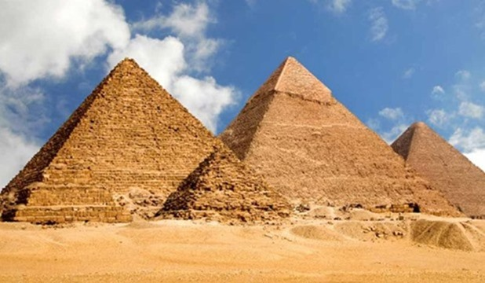
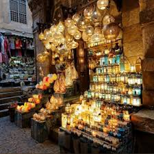

My favorite places in Egypt
there are alots of places to go and see in egypt
the pyramids
The pyramids are royal tombs, each bearing the name of the king who built it and was buried in it. The pyramid structure here is a stage in the development of tomb architecture in ancient Egypt. It began with a small hole that turned into a room underground, then into several rooms topped by a mastaba, and then developed to take the form of a step pyramid by the engineer Imhotep, the minister of Pharaoh Djoser in the Third Dynasty. This was followed by two attempts by King Sneferu, the founder of the Fourth Dynasty, to build a complete pyramid shape. However, the two pyramids appeared to be irregular in shape. They are located in Dahshur, one of them has a flat base and the other has a smaller shape, almost half the size of the first.
Khan al Khalili
The ancient Khan El-Khalili neighborhood is 600 years old, and is considered one of the oldest markets in Egypt and the Middle East. It still maintains its ancient architecture dating back to the Mamluk era, according to the Egyptian General Information Service. Khan El-Khalil has not been affected by time, and has always inspired writers and artists, always stimulating their imaginations to be creative, as Naguib Mahfouz wrote his novel Khan El-Khalili inspired by the atmosphere of the old neighborhood, describing it as: “In the long street, you will find square-shaped buildings connected by side passages that intersect the main street, and the sides of the passages and the street itself are crowded with shops (i.e. the shop); a shop for a watchmaker and a calligrapher, another for tea, a fourth for carpets, a fifth for antiques, and so on. While here and there there are cafes, each one no larger than a small shop, and craftsmen sit in front of the shops, patiently working on their arts.
